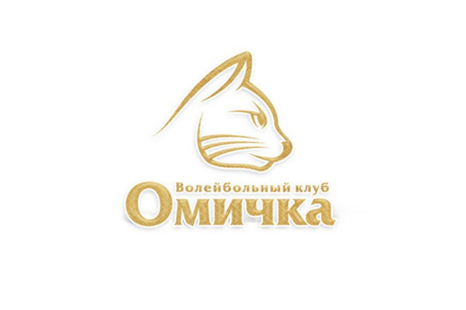
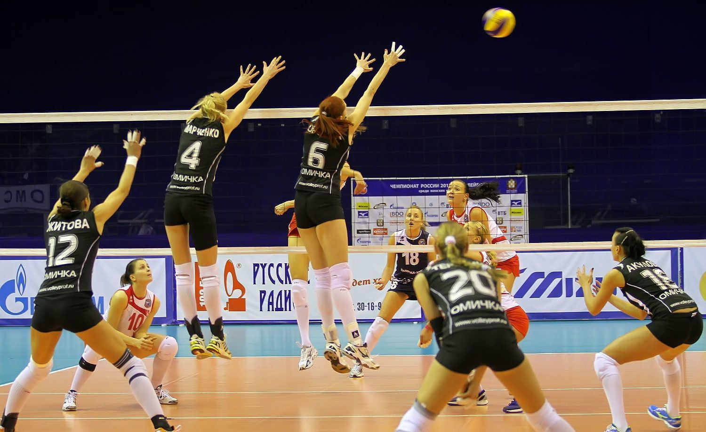

Омский спорт
Волейбольная команда Омичка

Главная
Омичка
Женская волейбольная команда «Спартак» (Омск) была образована в 1965 году. С 1966 принимала участие в чемпионатах СССР (2-я лига). Бессменным тренером с основания и до 2005 года работал В. В. Шумаков. В 2009 году переименована в «Омичку».
В сезоне 1976/1977 команда дебютировала в 1-й лиге всесоюзного первенства (5-е место), где и провела все последующие сезоны участия в чемпионатах СССР. Лучшего результата омский «Спартак» добился в 1987 году, заняв 2-е место. В сезоне 1992/1993 «Спартак» занял 1-е место в высшей лиге «Б» уже российского первенства, получив право на повышение в классе. В 1994 году омская команда дебютировала в высшем российском женском волейбольном дивизионе, где стала 5-й. После образования суперлиги (сезон 1995/1996) «Спартак» вошёл в её состав, но лишь на два сезона. В 1997 омички заняли последнее место в суперлиге чемпионата России и опустились в высшую лигу. В элитный дивизион омская команда вернулась в сезоне 1999/2000, но вновь заняв последнее (12-е) место надолго прописалась в высшей лиге (с 2001/2002 — высшая лига «А»). В 2007 году, завоевав 2-е место в высшей лиге «А» Омский «Спартак» после долгого перерыва вернул себе место среди лучших женских волейбольных команд России.
2010—2012 После ухода Сергея Овчинникова Главным тренером был назначен Виктор Ушаков, некогда уже имевший опыт работы на этом посту в фарм-команде омского «Спартака». Значительно обновлённый состав команды на предварительном этапе чемпионата России занял 6-е место, а затем в плей-офф выбыл в 1/4 финала, как и годом ранее уступив на этой стадии всё тому же краснодарскому «Динамо». В 2011 «Омичку» возглавил Владимир Кузюткин. Под его руководством команда вышла в плей-офф чемпионата России, сокращённый в олимпийский год до четырёх участников, и заняла в итоге 4-е место.
В сезоне омская команда выступала на трёх фронтах — чемпионате и Кубке России и Лиге чемпионов ЕКВ. В декабре 2014 омички вышли в финал Кубка России, но в упорнейшей борьбе проиграли в пяти партиях хозяйкам финального турнира — краснодарскому «Динамо». В Лиге чемпионов «Омичка» заняла 3-е место в группе, уступив будущему победителю главного клубного соревнования Европы — турецкой команде «Эджзачибаши» и швейцарскому «Волеро». После этого «Омичка» перешла в челлендж-раунд Кубка ЕКВ, где уступила турецкому «Галатасараю». Чемпионат России для омских волейболисток завершился на четвертьфинальной стадии неожиданным поражением от подмосковного «Заречья-Одинцово».
После окончания сезона в связи с финансовой неопределённостью и угрозой ликвидации клуба «Омичку» покинули почти все волейболистки основного состава, а также тренерский штаб. Остались в команде лишь Дарья Исаева и Валерия Шатунова. Фактически омский коллектив под руководством нового наставника, которым стал Андрей Смирнов, сформирован заново.
Уже по ходу сезона 2015—2016 «Омичка» из-за продолжающегося финансового кризиса вновь лишилась всех основных игроков. Выступления в суперлиге чемпионата России продолжила молодёжная команда клуба. За весь турнир команда одержала всего одну победу и замкнула турнирную таблицу. По окончании сезона клуб был объявлен банкротом и прекратил своё существование.
Арена Домашние матчи «Омичка» проводила в спортивно-концертном комплексе имени В.Блинова (ранее «Иртыш»). Построен в 1986 году. Вместимость 5200 зрителей. Адрес в Омске: улица Декабристов, 91.
